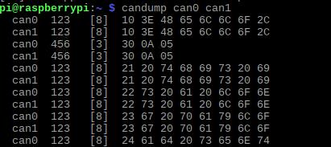

Introduction
Welcome to the Northwestern Solar Car Software team!

This handbook contains training tutorials and documentation for Fall 2023. Training will roughly follow the chapters in this book as they appear, but we may jump between sections as needed. There may be more information here than gets covered explicitly during training sessions; the goal is for this handbook to a be a valuable reference for new members.
Training Road Map
There's a lot to learn about our telemetry system—but don't worry! This handbook assumes no prior programming experience or familiarity with the hardware we use. Generally, many new members do enter with some programming background, so we may move faster through some chapters in practice.
As part of this training, you'll build a simple pipeline for processing telemetry data from our solar car. You'll construct this pipeline from the ground up, understanding each step in the life cycle of a given piece of data.
- First, you'll learn about the CAN standard for device communication on automobiles. At this level, telemetry data is electrical traffic on a network of wires.
- Next, you'll work with different data representations and try your hand at manually parsing collections of bytes known as CAN frames.
- With that done, you'll automate the CAN parsing process with Python. At this point, telemetry data exists as objects in memory.
- Next, you'll learn how to persist data in an SQL database for long term storage.
- Finally, you'll adapt your pipeline to receive data over an XBee radio network.
Along the way, you'll pick up some skills applicable to programming in general, including working on the command line, developing remotely with SSH, using Git to collaborate with others, organizing code with virtual environments, working with package managers, and more.
We'll end the training with an introduction to the current telemetry system and the projects we have planned for this year.
Training is expected to last roughly a month, but may be shorter or longer depending on member feedback. Simultaneous to training sessions following this handbook, more "hands-on" meetings will be taking place to introduce new members to the telemetry system in action.
Getting Help
Software is a small team, and every member should feel welcome and comfortable contributing to the project. If you have any concerns about training or the team in general, please reach out to Matthew Sinclair (Software Lead), Alexander Sorensen (Project Lead), or any other member of the solar car team. New members are the future of this organization, and we all want you to succeed!
Contributing
Want to add something to this handbook? The files for this site are publicly available at github.com/nusolar/training-f23. Submit a pull request with your proposed changes (see the Git and GitHub chapter to learn how).
Our purpose
The Software team's main responsibility is to monitor telemetry data coming from the solar car, including, for example, the state of charge for cells in the battery box, the amount of current being delivered to the MPPTs, the temperature in the motor controllers, and much more. While Mechanical and Electrical are the teams that actively build the car's structure and its circuitry, Software's role is nevertheless fundamental. By tracking telemetry data, we allow the team to:
- Diagnose issues with the electrical components on the car during development.
- Monitor relevant information during a race both from a remote dashboard and an onboard display.
- Predict failure and investigate their causes when they occur.
- Persist telemetry signals in a database for later analysis.
- Make more informed decisions about race strategy and future design cycles.

In the next chapter, you'll start the process of building a simple telemetry processing pipeline from scratch.
Current in a wire
At the most fundamental level, telemetry data exists as electrical signals propagating through a circuit. The exact way that wires are composed with resistors, batteries, motor controllers, MPPTs, etc. in a way that makes our solar car function is complex, but it's largely the domain of the Electrical team.

Much of the details at this level are not essential for the Software team to know, but two facts are particularly relevant:
- There exists a circuit in the solar car on which all the electrical devices are connected and communicate, and traffic on this circuit can be monitored. This is the raison d'être of the Software team; our job is fundamentally based on processing this traffic.
- This circuit follows the Controller Area Network (CAN bus) standard, which is a protocol commonly used in automobiles. The protocol defines certain electrical properties (e.g. the characteristic impedance of the transmission line) that, when met, allow devices on the network to communicate with minimal errors and noise. Again, this is largely Electrical's domain, but what's important for Software is the format of messages sent on this line. Before we get into that though (see CAN frames), we need to introduce data representations.
A stream of bytes
Thinking of telemetry data as signals in a wire is difficult. If we want to make sense of it, we need a better way to represent it. In this chapter, you'll learn how to format data in binary and hexadecimal, how to represent electrical signals as streams of bytes, and how to interpret individual CAN frames.

Traffic on a CAN bus
Representing data
Binary
You may be familiar with the notion that computers internally handle data as sequences of zeros and ones. Indeed, a "binary" representation of numbers (and more generally, any kind of data) turns out to be a natural choice for computers and electrical circuitry. So how does it work?
Consider the number 2023. When you read this number, you implicitly understand it using the base-10 representation we all learned in grade school. 2023 is made up of 2 thousands, 0 hundreds, 2 tens, and 3 ones. Or:
2023 = 2 × 103 + 0 × 102 + 2 × 101 + 3 × 100.
This common base-10 (or "decimal") representation of numbers likely developed because of the 10 fingers on human hands, but there is really nothing special about 10. For example, it is also true that:1
2023 = 1 × 210 + 1 × 29 + 1 × 28 + 1 × 27 + 1 × 26 + 1 × 25 + 0 × 24 + 0 × 23 + 1 × 22 + 1 × 21 + 1 × 20.
Working in a base-2 (or "binary") representation, where every digit must be either 0 or 1, we can see that 2023 can be written as 11111100111. To avoid confusion between bases, we typically prepend the prefix "0b" to numbers written in binary. And so, 2023 = 0b11111100111.
Binary gives us a way to "encode" signals sent on wires into something more familiar—numbers. A signal with a voltage profile of high-high-high-low, for example, maps to 0b1110 in binary, or 14 in decimal. Nevertheless, binary is difficult for humans to work with directly. We need a better representation for raw data2.
Terminology
Just as we refer to each character in a decimal number as a digit, we also define the term bit to mean "binary digit". The number 0b10101011 has 8 bits.
Binary numbers can grow quite long, and so bytes (where 1 byte = 8 bits) are more commonly used as a unit when speaking of binary data.
Hexadecimal
Hexadecimal is a base-16 numbering system. Like binary, it is more useful for representing raw data than decimal. But unlike binary, hexadecimal tends to be much easier to read at a glance. Continuing the previous example, we may write:
2023 = 7 × 162 + 14 × 161 + 7 × 160
Here we run into trouble with the numerals we have at our disposal. The above coefficients would suggest that the base-16 representation of 2023 is something like 7|14|7. Since there are no natural single-character glyphs for numbers above 9, the common practice is to continue with the alphabet (10 → A, 11 → B, 12 → C, etc.). Therefore, the hexadecimal representation of 2023 becomes 0x7E7 (where the prefix "0x" denotes hexadecimal).
| decimal | binary | hexadecimal |
|---|---|---|
| 00 | 0b0000 | 0x0 |
| 01 | 0b0001 | 0x1 |
| 02 | 0b0010 | 0x2 |
| 03 | 0b0011 | 0x3 |
| 04 | 0b0100 | 0x4 |
| 05 | 0b0101 | 0x5 |
| 06 | 0b0110 | 0x6 |
| 07 | 0b0111 | 0x7 |
| 08 | 0b1000 | 0x8 |
| 09 | 0b1001 | 0x9 |
| 10 | 0b1010 | 0xA |
| 11 | 0b1011 | 0xB |
| 12 | 0b1100 | 0xC |
| 13 | 0b1101 | 0xD |
| 14 | 0b1110 | 0xE |
| 15 | 0b1111 | 0xF |
As you'll see in the next chapter, both binary and hexadecimal are useful ways of interpreting messages sent on the CAN bus.
Don't worry about how to come up with this expression for now. It's not terribly difficult, but for this training you will only need to be familiar with the concept and the appropriate Python functions to call.
"Raw data" generally refers to any information that is not meant to be read or written by humans. CAN frames, as we will see later, are one such example. It is also worth noting that raw data is often referred to as binary data to emphasize that it is best thought of as bytes and not as text. You may also hear executable files called binaries for a similar reason.
CAN frames
As mentioned in Chapter 2, the CAN bus is the network on which all the solar car's components communicate with one another. Messages sent on this network are called CAN frames.


As shown above, many of this bits in a frame are responsible for ensuring reliable and orderly transmission on the line (e.g. the 16 bits for the cyclic redundancy check). These details are largely unimportant for Software. For our purposes, a CAN frame is composed of two parts: the frame ID and the data.
- Frame ID: The frame ID (also called the arbitration ID, message ID, standard identifier, or simply ID) contains 11 bits and is responsible for identifying the sender of the CAN frame and the type of values contained within. For example, on a given CAN network, a frame ID of 0x403 might correspond to velocity measurement message from one motor controller, an ID of 0x413 might correspond to the same message from another motor controller, and an ID of 0x602 might indicate a temperature measurement message from an MPPT.
- Data: Up to 64 bits of a CAN frame contain the actual values of some signal. This is the core of the message.
In the next section you'll learn more about CAN frames as you try your hand at decoding them yourself.
Exercise - Thinking like a computer
It's time to put your newfound CAN bus knowledge to use. In this exercise, you'll manually decode a few CAN frames in preparation for later automating this first stage of the telemetry processing pipeline with Python.
For this exercise, assume we are working on a CAN bus containing the following four devices:
- An Elmar Solar MPPT with base address 0x600.
- An Elmar Solar MPPT with base address 0x610.
- An Elmar Solar MPPT with base address 0x620.
- A Tritium WaveSculptor 22 Motor Controller with base address 0x400.
To decode the following CAN frames observed on this network, you will need to refer to the relevant datasheets for each device, which can be found in the corresponding sections of the Hardware Reference in this handbook (see the sidebar on the left).
A note on types
In the CAN frame specifications for each device, you will find information about the "type" of a variable inside a message. For example, the "Identification Information" frame for a motor controller is specified as containing two variables of type
Uint32. Similarly, you will also find references toUint8,Uint16, etc. These types signify that the bit pattern in the data field should be parsed as an unsigned (i.e. nonnegative) integer, with bit-widths of 32, 8, 16, etc. Unsigned integers are not too hard to parse by hand; it's analogous to the discussion in Section 3.1.You will also see messages where variables are given the type
float(explicitly in the MPPT datasheet; implicitly in the motor controller specs). Afloatis a representation of fractional numbers, following the IEEE 754 Standard. 1.5, -2.0, 10000000.0, and 0.30000000000000004 can all be represented with floating point numbers. Although most signals are naturally of typefloat(temperature, velocity, voltage, etc. are not going to be integers), parsingfloats by hand is entirely different than for integers and is very tedious. You can use an online converter like this one to decodefloats from their hex representation (you can omit the "0x" in the converter). The result will be in the "little-endian" cell.
Frames to decode
| Frame ID | Data |
|---|---|
| 0x625 | 0x0000000500018028 |
Solution
This is a "Status" message sent by the MPPT at base address 0x620. The signal values are:
{
"CAN_RX_error_counter": 0,
"CAN_TX_error_counter": 0,
"CAN_TX_overflow_counter": 0,
"HW_overvoltage": 1,
"HW_overcurrent": 0,
"Twelve_V_undervoltage": 0,
"Batter_full": 0,
"Battery_low": 0,
"Mosfet_overheat": 0,
"Low_array_power": 0,
"Global_MPPT": 0,
"Local_MPPT": 0,
"Duty_cycle_max": 0,
"Duty_cycle_min": 0,
"Mosfet_temperature_error": 0,
"Output_voltage_max": 0,
"Input_current_max": 0,
"Input_current_min": 0,
"Mode": 1,
"Test_counter": 40
}
| Frame ID | Data |
|---|---|
| 0x409 | 0xDA35EF3F68E75440 |
Solution
This is a "3.3V & 1.9V Voltage Rail Measurement" message sent by the motor controller at base address 0x400. The signal values are:
{
"Supply1V9": 1.868830919265747,
"Supply3V3": 3.3266239166259766
}
| Frame ID | Data |
|---|---|
| 0x612 | 0x506B76410276B141 |
Solution
This is a "Temperature" message sent by the MPPT at base address 0x610. The signal values are:{
"Controller_temperature": 22.182621002197266,
"Mosfet_temperature": 15.401199340820312
}
An object in memory
Now that you've had a chance to decode a couple CAN frames by hand, you can probably agree that manually fiddling with bits and bytes is a slow and tedious process. Considering that dozens of frames will be sent on the car's CAN bus every second, we're going to need a way to automate the decoding.
In this chapter, you will build the foundation of a telemetry processing pipeline with Python. Raising the level of abstraction from bytes to Python objects, you will be able to process hundreds of CAN messages in the blink of an eye. At the end of the chapter, you will use your new program to pinpoint the cause of an electrical failure in a fictional post-mortem on the car.

Python memory
The Python programming language
Python is a simple, flexible, and general-purpose programming language. Due to the high-level abstractions it provides, it is commonly used in a wide array of domains and boasts a rich and growing ecosystem.

Python logo
Python is the primary programming language used in the Software team, both due to its approachability for beginners and the availability of specific libraries we leverage in our system. In this section, you will setup a development environment for Python and learn the basics of the language.
Setting up
In this section, you'll be guided through a Python installation and development setup.
The instructions in the section are opinionated. That is, there are alternative ways to orchestrate a Python development environment, but the author of this handbook recommends the ways listed here. If you are familiar with and prefer an alternative method (e.g. anaconda), feel free to diverge from these instructions, but it may become harder to debug your specific setup if the need arises.
macOS
If macOS is your operating system of choice, you likely already have Python installed, but the specific version is probably old and best left alone. To get started, open the terminal (Terminal.app in Applications). The terminal is an environment where you can control your computer with textual commands instead of a GUI. You will use the terminal a lot in your software career.
In the terminal, commands are issued following the prompt (typically a
$or>). Commands listed here follow the format$ [command], to indicate the[command]is to be run in the terminal. When copying these commands, do not copy the leading$.
Install XCode command line tools
First, you should install a suite of command line tools Apple bundles for developers, if you have not already. To do this, run:
$ xcode-select --install
Install Homebrew
Homebrew is a package manager for macOS. Package managers allow you to easily install and organize software packages. We'll need Homebrew to install some packages later. If you don't already have Homebrew, you can install it with:
$ /bin/bash -c "$(curl -fsSL https://raw.githubusercontent.com/Homebrew/install/HEAD/install.sh)"
With that done, run:
$ brew doctor
to ensure the everything is installed correctly, and then run:
$ brew update
to ensure things are up-to-date.
Install pyenv
We're going to use pyenv to manage our Python installation. While you can install Python directly through Homebrew, the version may be a couple months out of date. Pyenv allows you to manage multiple Python versions easily, and you will never have to wait for Homebrew if you need to update to the latest version.
$ brew install pyenv
Next you will need to follow the shell setup for pyenv to properly integrate pyenv into the command line. To check which shell you are using (likely zsh, but possibly bash), run:
$ echo $SHELL
Once you have followed the shell setup instructions, restart your shell:
$ exec "$SHELL"
Now you should be able to use pyenv to manage Python versions. To start, run:
$ pyenv versions
You should see that only the system python is installed. To install the latest version of Python (3.12.0 currently), run:
$ pyenv install 3.12.0
Then, you may want to set this version to be the global default:
$ pyenv global 3.12.0
Install direnv
You should now have a new global installation of Python. At this point, you could begin writing Python scripts and installing Python packages. For various reasons, however, it is not advisable to install packages in your global Python environment. Instead, best practices advise creating per-project environments so as to avoid any cross-project conflicts. There are many ways to create and manage so-called virtual environments (virtualenv, venv, pipenv, anaconda, poetry, direnv, pyenv-virtualenv, etc.), but the author recommends direnv.
Direnv allows you to create project environments that automatically load/unload when you enter/exit the project folder. Install it with Homebrew:
$ brew install direnv
To work properly, direnv needs to be able to hook into the shell. Follow the setup instructions to finish the installation. For example, if you are using zsh, you would run:
$ echo 'eval "$(direnv hook zsh)"' >> ~/.zshrc
If you use tmux as a terminal multiplexer, you may need to make some adjustments to your shell config file to ensure everything works. For example, the author of this handbook had to add the following lines to his
.zshrc:# Make tmux play nicely with direnv alias tmux='direnv exec / tmux' # Need to reload direnv in tmux for some reason to ensure # correct environment variables. Particularly for pyenv. if [ -n "$TMUX" ] && [ -n "$DIRENV_DIR" ]; then export DIRENV_LOG_FORMAT= # Don't print this reload or the Powerlevel10k prompt will freak out. direnv reload fi
Windows
Windows is a trickier platform for Python development. Because many packages are only available on Unix-like platforms (macOS or Linux), and because the Raspberry Pi runs Linux anyway, it's best for consistency to install the Windows Subsystem for Linux (WSL). To install WSL, follow Microsoft's instructions for setting up a development environment (follow up through the "Update and upgrade packages" section; the following sections are worth reading but not necessary right now).
Once you have setup WSL and are in a Linux command line, follow the previous instructions
for installing pyenv and direnv, but use your system package manager (apt if on Ubuntu)
instead of Homebrew.
Text Editor
To actually write code, you will need a text editor or an IDE. This is the subject of a long-running programming flame war, but VS Code and PyCharm are good choices.
Basics
This page will be updated as we get a better grasp of incoming members' Python background. For Python beginners, the official Python tutorial is a very good resource to pick up the language as you work through the exercise in the following section.
Running Python code
The Python interpreter can be accessed interactively in the terminal:
$ python
Python 3.12.0 (main, Oct 2 2023, 17:01:41) [Clang 14.0.0 (clang-1400.0.29.202)] on darwin
Type "help", "copyright", "credits" or "license" for more information.
>>> print("Hello, world!")
Hello, world!
>>> 1 + 2
3
>>>
Depending on your Python installation, you may need to use
python3orpyinstead of thepythoncommand.
But, for larger scripts, it's better to write Python code into a file, which can be run
later. For example, try creating a file called hello_world.py with the contents:
print("Hello, world!")
We can then run this file in the terminal:
$ python hello_world.py
Hello, world!
It should also possible to run the file using the "Run" button in your editor of choice.
Simple examples
Many of the following code snippets have been taken from the official Python tutorial. The purpose of this section is to give a very broad overview of what Python looks like. The hope is that you will learn the relevant parts of Python as you need them, while you work on the telemetry pipeline as part of this training. To learn the language more thoroughly, please refer to that tutorial.
Variables in Python are declared using the [name] = [value] syntax, and messages can
be output to the screen using the print function:
i = 256 * 256
print("The value of i is", i) # output: The value of i is 65536
On any line, everything after a # is a comment. They do not affect to behavior of your code.
# This is a comment.
x = 1 # This is also a comment.
# x = 2
print(x) # output: 1
Python defines a set of default types available to use in your code, including integers, floating point (fractional) numbers, complex numbers, booleans (true/false), strings (text), lists, and much more.
an_integer = -10
a_float = 1.5
a_complex_number = 1 + 2j
a_boolean = True
a_string = "This is a string!"
a_list = [1, 2, 3, 4, 5]
Python programmers can use the if, elif, and else keywords to cause different behavior depending
on given conditions.
x = 5
if x < 0:
x = 0
print('Negative changed to zero')
elif x == 0:
print('Zero')
elif x == 1:
print('Single')
else:
print('More') # output: More
for and while loops can be used to repeat certain behavior. Loops are commonly used
to iterate over collections, like lists. For example:
a = ['Mary', 'had', 'a', 'little', 'lamb']
for i in range(len(a)):
print(i, a[i]) # output:
# 0 Mary
# 1 had
# 2 a
# 3 little
# 4 lamb
Functions are blocks of code which can defined once and called many times later.
Functions are Python are defined using the def keyword:
def fib(n): # write Fibonacci series up to n
a, b = 0, 1
while a < n:
print(a, end=' ')
a, b = b, a+b
print()
# Now call the function we just defined:
fib(100) # output: 0 1 1 2 3 5 8 13 21 34 55 89
fib(2000) # output: 0 1 1 2 3 5 8 13 21 34 55 89 144 233 377 610 987 1597
Sometimes you'll want to use code that someone else wrote or that lives in a different file
in your own project. You can do this with the import statement.
import math
print(math.sin(0.5)) # output: 0.479425538604203
Here, we imported the math module from Python's standard library to calculate
the sine of 0.5. The standard library is automatically available to your Python
program. Other packages must be installed before they can be used.
These examples only scratch the surface of what there is to learn about Python. Again, there are many good online resources that go into much more detail!
Exercise - An automated autopsy
This exercise is broken into two parts. In the first section, you will craft a Python parser to interpret real CAN frames sent by an isolated MPPT under idle operation. Values sent by this MPPT will be boring and predictable. In part two, you'll adapt your parser to handle CAN data from multiple connected devices. The data in part two will be generated to contain a mystery—at some point in this fabricated scenario, a failure will occur in the car. Your job is to analyze the CAN traffic to determine when and where the failure first appeared, and what might have caused it.
Part 1 - Isolated MPPT
This data file contains CAN frames sent by an MPPT
(base address 0x600) on it's own CAN network. Frames in this file appear in a
[Frame ID] [Data] text format, separated by newlines. Frame IDs and data are
given in hex, although the leading "0x" is omitted.
Your job is to use the MPPT datasheet to construct a Python program that processes this file into something human-readable.
Remember that variables in CAN frames are stored in little-endian byte-order.
Hint
You may find the binascii.unhexlify and struct.unpack functions helpful in converting from a hex string to an integer or float.
You can also use int(some_hex_string, 16) to parse a hex string to an integer. This
can also be done with unpack and unhexlify, but unhexlify requires an even number
of hex digits, so it can be a bit nicer to just use int directly for, say, the frame
id, which is 3 hex digits.
Example
The first line in the data file is 604 6666DA420000E040. We can recognize this as a
frame sent by the MPPT at base address 0x600 with an id offset of 0x4.
The relevant section of the MPPT datasheet tells us that this is the "Limits" message, which contains the following variables.
| Variable | Byte | Type | Unit |
|---|---|---|---|
| Max. Output Voltage | 0-3 | FLOAT | Volt |
| Max. Input Current | 4-7 | FLOAT | Ampere |
Here's how we can parse this frame in Python.
Let's start by storing the first frame in a variable and then splitting it into the frame id and the data:
raw_frame = "604 6666DA420000E040"
frame_id, data = raw_frame.split(" ")
The frame_id, data = ... syntax we used above is called "unpacking" or
"destructuring", and it is a clean way of breaking down a list (or any iterable)
into multiple variables. In this case, raw_frame.split(" ") returned a list
of 2 strings, the first of which we assigned to frame_id, and the second to
data. It would have been equivalent to write:
split = raw_frame.split(" ")
frame_id = split[0]
data = split[1]
At this point, both the frame_id and data variable are strings (text).
Because in general we need to examine the offset of the frame id from the
base address to determine the message type, we will need to convert frame_id
to an integer. Similarly, we will need to end up converting portions of
data into the types specified by the MPPT datasheet.
To convert frame_id into an integer, we can use
Python's builtin int
function with two arguments to parse a string into an integer.
frame_id = int(frame_id, 16)
We can then determine the offset from the base address programmatically:
offset = frame_id - 0x600
Notice that Python allows you to write integers directly in hex using the 0x prefix.
Of course, in this case we already know that the offset is 4. But, in general, you'll
need to determine the offset and then examine the data accordingly. Let's say we're
choosing to do this in one big if ... elif ... elif ... else block.
if offset == 0:
... # handle offset 0
elif offset == 1
... # handle offset 1
... # handle more offsets
elif offset == 4
... # handle offset 4
... # handle more offsets
For the frame we're examining in this example, we know that we're going to end up inside
the branch for offset == 4. The MPPT specs tell us that a broadcast message with offset
4 contains two 32-bit floats in the data field. We can break the data into halves using
Python's slicing syntax:
first_half = data[:8]
second_half = data[8:]
And then we can use unhexlify to convert each half from a string to the represented bytes:
from binascii import unhexlify
first_half = unhexlify(first_half)
second_half = unhexlify(second_half)
Note that we could equivalently have chosen to unhexlify the whole message first, and then
slice it into halves.
Finally, we can use unpack to decode the bytes into little-endian floats (the "<f"
given to unpack is a format specifier meaning little-endian 32-bit float; you can find
more info in the docs for unpack).
from struct import unpack
max_output_voltage = unpack("<f", first_half)[0]
max_input_current = unpack("<f", second_half)[0]
At this point, we've decoded the CAN frame! You can now print the decoded information to the screen, append it to a list, store it in a dictionary, or use whatever format you think works best.
Solution
There are many possible ways to write the code to solve this exercise, so you're not expected to have written code that looks the same as this. This is only one of the possible solutions and is here as a reference.
# We're going to use the `unhexlify` function to convert hex strings into the
# actual bytes they represent.
from binascii import unhexlify
# We'll also use the `unpack` function to decode `float`s and `int`s from
# raw bytes.
from struct import unpack
def decode_mppt_data(offset, data):
if offset == 0:
# Input measurements
return {
"Input Voltage (V)": unpack("<f", data[:4])[0],
"Input Current (A)": unpack("<f", data[4:])[0],
}
elif offset == 1:
# Output measurements
return {
"Output Voltage (V)": unpack("<f", data[:4])[0],
"Output Current (A)": unpack("<f", data[4:])[0],
}
elif offset == 2:
# Temperature
return {
"Mosfet Temperature (deg. Celsius)" : unpack("<f", data[:4])[0],
"Controller Temperature (deg. Celsius)": unpack("<f", data[4:])[0],
}
elif offset == 3:
# Auxiliary power supply
return {
"12V (V)": unpack("<f", data[:4])[0],
"3V (V)" : unpack("<f", data[4:])[0],
}
elif offset == 4:
# Limits
return {
"Max. Output Voltage (V)": unpack("<f", data[:4])[0],
"Max. Input Current (C)" : unpack("<f", data[4:])[0],
}
elif offset == 5:
# Status
return {
"CAN RX error counter" : unpack("<B", data[:1])[0],
"CAN TX error counter" : unpack("<B", data[1:2])[0],
"CAN TX overflow counter": unpack("<B", data[2:3])[0],
"Error flags" : unpack("<B", data[3:4])[0],
"Limit flags" : unpack("<B", data[4:5])[0],
"Mode" : unpack("<B", data[5:6])[0],
"Test counter" : unpack("<B", data[7:])[0],
}
elif offset == 6:
# Power connector
return {
"Output Voltage (Battery side of fuse) (V)": unpack("<f", data[:4])[0],
"Power connector Temperature (deg. Celsius)" : unpack("<f", data[4:])[0],
}
else:
# Unknown message, throw an error to the caller.
raise Exception(f"No message matches offset 0x{offset:x}")
def decode_data(base_address, offset, data):
if base_address == 0x600:
# If the base address belongs to a known MPPT, decode the data using
# a MPPT-specific helper function, and return the decoded message.
return { "sender": base_address, "message": decode_mppt_data(offset, data) }
else:
# Otherwise, the message doesn't match any known device. Throw an error
# to the caller.
raise Exception(f"No device matches base address 0x{base_address:x}")
with open("mppt_data.txt", "r") as f:
for line in f:
# Take the line, remove any leading/trailing whitespace,
# and then split across the space dividing the frame id from the data.
left, right = line.strip().split(" ")
# Convert the frame id hex string into an actual number.
frame_id = int(left, 16)
# Convert the data hex string into bytes.
data = unhexlify(right)
# Decompose the frame id into a base address and offset.
base_address, offset = divmod(frame_id, 16)
base_address *= 16
# Decode the message and print it.
print(decode_data(base_address, offset, data))
The result of running this program on the MPPT data provided above can be found in this output file.
Part 2 - Chaos on the CAN network
In this exercise, you'll will be given a dump of CAN traffic from the following made-up scenario.
Because the CAN data for this scenario has been fabricated, you shouldn't expect to see super-realistic and -consistent data reported across all the devices on the network. Rather, the tampered data has been made in a way to (hopefully) make localizing a fault easier.
While working on an electrical line in SC7s, members of the Electrical team heard a pop from within the car. A few seconds later, the top-shell was lifted, and one of the devices attached to the CAN line was found damaged and unresponsive. The car was then immediately powered off.
This incident occurred during winter, while the car was idle (not driving) and being worked-on in North Garage. The Electrical team reported the following CAN network configuration:
- MPPT at base address 0x600
- MPPT at base address 0x610
- MPPT at base address 0x620
- Motor controller at base address 0x400
- Driver controls at base address 0x500
- Battery management system
They were also able to provide this log of CAN traffic in the minutes leading up to the incident.
By analyzing this CAN traffic, can you figure out which device was damaged, what type of damage was sustained, and what may have caused the failure?
Advice
Many of the messages in the given data file come from the battery management system (BMS), which works a little differently than the other devices you are familiar with. CAN frames broadcast from the BMS are programmable and do not necessarily follow the base address + offset pattern used by the other devices. For this exercise, the BMS is not relevant to electrical failure, which means you should ignore any messages from the BMS (i.e. the ones that are not from the MPPTs, motor controller, or driver controls).
You may also not need to decode every frame from the other devices. It's possible to complete this exercise by identifying oddities in the raw frames, and limiting your focus only to those oddities.
Hint #1
We know that the "pop" was heard just a few seconds before the car was powered off (at which point the CAN traffic ends). So it's reasonable to expect the failure to appear very near to the end of the traffic log file.
You also should try looking for CAN messages that stop being sent before the rest of the traffic ends, the idea being to identify the damaged device by seeing if it goes silent.
You might also try looking for messages that only start appearing near the end of the log file. You may observe a "reset" message that one device sends when another stops responding.
Note that you can make these observations by only looking at the frame IDs and not actually decoding any data. So this might be a good starting point.
Hint #2
The previous hint should let you identify which device has failed: it's the motor controller at base address 0x400. The last message sent by the motor controller occurs at line 42776, over 300 lines before the file. For comparison, all the other devices on the network have messages appearing at most 35 lines from the end of the file. You could also have identified the issue with the motor controller by observing the first appearance of the message with ID 0x503 at line 42888. This message is a "reset" message sent from the driver controls to the motor controller, indicating a problem with the motor controller.
Now that you know which device has been damaged, it's time to figure out what happened. To do this, you need to decode some messages from the motor controller. Many of the messages have all zeros in their data—those probably aren't worth decoding. Also, remember that the car isn't driving in this scenario, so messages indicating motor and vehicle velocities likely aren't relevant either. For the remaining messages, try decoding, say, the last 10 instances of each. Are there any values that are changing rapidly?
The command line
Commands given in this chapter follow the format
$ [command]first mentioned in the Python setup chapter. Remember that the$indicates that the[command]should be run in the terminal and is not itself part of the command.This chapter also assumes a Unix (i.e. macOS or Linux) command line.
Computers are most often used through the graphical user interface (GUI) provided by the operating system. GUIs make common activities like browsing the web, reading a PDF, etc. easy for humans. Programs, however, often prefer to operate on text accessed through "the command line". The command line is a place where you use a program through its command line interface (CLI) as opposed to a GUI. Familiarity with the command line is very useful for a programmer, and while this chapter will only touch briefly on the basics of the terminal, it will hopefully help you understand the command line usage throughout this handbook.
Navigating file hierarchies
You are probably already familiar with using your operating system's GUI for file management (Finder on macOS, File Explorer on Windows) to create/modify/delete folders (also called "directories") and files. You can do the same from the command line.
To begin, open a terminal and run:
$ pwd
The pwd command prints the current/working directory. The output you see may look
like /Users/username. This is a Unix file path. File paths are a way to identify
a file or directory by constructing a "path" to follow in order to reach it from the
universal top-most directory (called the "root" directory). For example, consider the
following path:
/Users/admin/documents/report.pdf
This path says:
- Inside of the root (
/) folder, there is a folder calledUsers. - Inside of the
Usersfolder, there is a folder calledadmin. - Inside of the
adminfolder, there is a folder calleddocuments. - Inside of the
documentsfolder, there is a file calledreport.pdf.
Notice that folders on Unix-like systems are separated by /. On Windows, the
path separator is \\. Also notice that files (typically) contain an extension
that hints at the file type. The file extension for report.pdf is .pdf, meaning
this file is like a PDF.
Now that you understand Unix paths, let's discuss how to list files and move between folders. For the remainder of this section, we'll assume the following file hierarchy, although you are encouraged to try listing files on your own computer:
foo
├── bar
│ ├── images
│ │ ├── cat.png
│ │ └── dog.png
│ └── info.txt
└── baz
└── hello.txt
Let's assume you are currently positioned in the foo folder. The ls command lists files
in the current directory:
$ ls
bar baz
You can also give ls a path to a folder.
$ ls ./bar/images
cat.png dog.png
Notice the use a relative path. Instead of specifying the absolute path starting at the root
(/), we gave a path relative to the current directory (.). On Unix-like systems, . means
current directory and .. means parent directory.
We can change our current directory using cd:
$ cd ./bar
$ ls
images info.txt
Now, we've set the current folder to foo/bar. If wanted to move into foo/baz, we can
move back into the parent directory and then into baz:
$ cd ..
$ cd ./baz
Note that we could have equivalently used cd just once by writing $ cd ../baz.
We can use the cat command to print the contents of a file.
$ cat hello.txt
Hello!
$ cat ../bar/info.txt
This is some important info.
Using ls, cd, and cat is the simplest way to navigate through a file system on the
command line. On their own, they aren't very powerful, but they will come in handy any
time you find yourself on the command line. There is, of course, so much more to learn
about the command line that we can't cover here. If you're interested, check out
this tutorial.
Remote development
You will often end up reaching for the command line when developing on remote computers. For example, our Raspberry Pi microprocessor does not come with a screen or a keyboard. And although we have purchased ones, it's often easier to access the Pi through the terminal.
SSH
The Secure Shell Protocol (SSH) is a way to access remote computers through a CLI. You probably already have SSH installed (OpenSSH, specifically). If not, you can install it through your package manager.
In this section, we'll log in to the Raspberry Pi over SSH. Because this involves sharing the IP address and password of our Pi, we will cover this in person, instead of writing it here.
Goals
Congratulations on completing Fall training! Now that you are familiar with our telemetry system, let's go over some goals for the upcoming year.
Project listing format
The projects on this page are listed in the following format:
Project name ([⚠️ | ⭐️ | 🌱], 👥 [SIZE], 📅 [DURATION])
A project's level of importance is given by:
- ⚠️ ⇒ Very important, should be prioritized.
- ⭐️ ⇒ Important, ought to happen eventually.
- 🌱 ⇒ Less critical and more free form, will depend on time and member interest.
A rough estimate of the number of people that a project will require is given in the 👥 [SIZE] field. Similarly, a (very) rough estimate of a project's expected duration in given in the 📅 [DURATION] field.
These estimates are very rough and not hard requirements. The true duration or amount of people working on a project may end up differing drastically from what is predicted here.
Polishing the current system
The current telemetry system last year was only partly ready during FGSP 2023; issues with internet connectivity at the track prevented us from pushing last minute fixes to the Raspberry Pi. The following items address aspects of the current system that either need fixing, testing, or just some polish.
Basic testing and data collection (⚠️ , 👥 4-12, 📅 3-4 weeks)
We need to test all the components in the current telemetry system with the car driving. There are likely to be bugs that need fixing or things not quite working as expected, and we need to ensure everything is functional before parts of SC7s are cannibalized for SC8. This also presents an opportunity to collect real data traces from the car for other projects (Data mocking and CAN traffic replays and Exploring time series data with machine learning, for example).
This project will likely coincide with the later parts of training and involve the whole Software team, as it's good hands-on experience.
Postgres backend for base-station database (⚠️ , 👥 1-3, 📅 2 weeks)
We currently use SQLite as the database of choice for telemetry data on the base-station. To make this work with Grafana (which does not support SQLite out of the box), we use the Grafana SQLite Datasource plugin. However, we've discovered that the plugin does not seem to support M2 Macs, and so this project will require refactoring the relevant code to target Postgres (or a similar supported SQL database).
More space-efficient serialization in XBee communication (⚠️ , 👥 1-3, 📅 2-4 weeks)
The Xbee modems we use (see Digi XBee® SX 1-Watt 900 MHz RF) are limited to sending a maximum of 256 bytes per packet. We are able to transfer larger messages by splitting the message into chunks, but this introduces issues if chunks are lost in transmission and is generally inefficient. The current serialization format we use for XBee communication, JSON, is very inefficient for this purpose. This project will explore alternative serialization formats, like MessagePack or something custom-made, to reduce the number of bytes sent over radio and eliminate the need for buffered communication.
Improved Grafana dashboard (⚠️ , 👥 2-5, 📅 4-12 weeks)
Our current Grafana dashboard is incomplete. This project will require adding more panels for relevant signals (which is fairly straightforward) and may explore how best to represent error and limit flags, as well as how to leverage Grafana's more advanced features to, for example, issue an alert if a temperature reading exceeds a safe value.
New projects
Data mocking and CAN traffic replays (⚠️ , 👥 2-4, 📅 3-6 weeks)
We will not always have access to live CAN data from the solar car during our meetings. Initial work was done last year to provide virtual CAN data generation, loosely based on previous CAN traffic. This project will expand upon this work to introduce data mocking based more accurately on observed signals.
It would also be nice to be able to save CAN traffic and replay it at a later time. We have done this sporadically and in a limited capacity in the past, essentially writing CAN traffic to text files. It would be much better to store this data in a well-organized database (perhaps hosted in the cloud; see Cloud hosted databases and dashboard), with an easier way to save traces.
Having CAN data saved and readily accessible is a prerequisite for projects which need to run tests on or analyze such data (like Rigorous, end-to-end testing and Exploring time series data with machine learning).
Rigorous, end-to-end testing (⭐️, 👥 2-5, 📅 6-18 weeks)
No matter how well thought out a complex piece of software is, it is ultimately likely to have bugs or be error-prone if it isn't battle-tested. This is especially true for our telemetry system, since automobiles are generally not friendly environments for computers. At any point during operation, the CAN connection may be jostled loose, an XBee might go out of range, the Raspberry Pi may momentarily lose power or be completely fried by excessive current, etc.
In all these scenarios, we want predictable invariants to be upheld. For example, if the Raspberry Pi loses power, the information on the onboard database should contain all the traffic parsed before the power loss (within a window of, say, a few seconds). Or, if the onboard XBee is jostled lose mid-transmission and sends a corrupted packet, the base-station receiver code should not crash.
The best way to ensure our software is robust (excluding years of field operation), is to write comprehensive tests. A common technique is end-to-end testing, which tests a system holistically, attempting to accurately mimic real operation. This project will involving incrementally creating test suites to validate our software. Those working on this project may explore modeling the car's operation as a state machine, where various effects (e.g. a cable being jostled lose) are represented by state transitions.
Cloud hosted databases and dashboard (⭐️, 👥 2-4, 📅 3-6 weeks)
Currently, all databases and dashboards are run locally—that is, on a member's laptop or the Raspberry Pi. It would be nice to migrate parts of the system, especially the code running on the base-station, to cloud environments, so that base-station operations would never depend on someone's laptop running out of battery, for example. Hosting our data on the cloud would also allow us to share our dashboard on a dedicated website.
XBee cellular communication (⭐️, 👥 3-6, 📅 4-12 weeks)
Currently, all communication between the solar car and the base-station occurs over two radio transmitters. These transmitters work well enough, but are prone to losing contact when separated too far. Last year, we purchased an XBee cellular chip, but we have not started using it yet. This project will involve working with a new piece of hardware to improve our system and will likely involve working with cloud environments.
Onboard GPS module with dashboard integration (🌱, 👥 2-5, 📅 6-12 weeks)
It would be nice to visualize the car's progress along the track on our dashboard. This project will oversee the addition of a new GPS module to the car, which will provide positioning data that must be relayed to the base-station and displayed visually.
Onboard front-facing camera with dashboard integration (🌱, 👥 2-5, 📅 6-12 weeks)
A similar improvement to our dashboard would be a front-facing camera that shows the drivers perspective in the car. F1 broadcasts, for example, tend to show this perspective. While it would be a great addition to the dashboard, members working on this project will need to first determine whether transmitting live video data if feasible with our hardware.
Investigating the energy cost of the Python runtime (🌱, 👥 1-2, 📅 4-12 weeks)
Energy consumption is not a factor often considered when writing software. For our system, however, being a battery hog is unacceptable, as all the power the onboard system uses ultimately comes from the solar cells that power the car. Those interested in other programming languages might investigate the energy cost of running Python on the Raspberry Pi over a more lightweight language like C, Go, or Rust. If it turns out the Python runtime is unacceptably inefficient for our needs (this admittedly seems unlikely), the team could consider migrating a small part of the system to a different language.
Running an onboard REPL to aid debugging (🌱, 👥 1-4, 📅 3-6 weeks)
LISP was the first programming language to feature a REPL (Read, Eval, Print Loop). In the late 90s, a team at NASA deployed LISP code running with a REPL on a Deep Space probe. When code on the probe stopped working, engineers on Earth were able to debug it and send it the necessary commands to fix the issue through this REPL.
Python, like LISP, can run with a REPL, and, like the NASA team, we stand to benefit from accessing such an onboard REPL remotely. It would be a challenge to figure out to set this up over XBee devices, but this project could be a lot of fun!
Exploring time series data with machine learning (🌱, 👥 1-5, 📅 3-18 weeks)
Analyzing CAN traffic with machine learning models could provide interesting opportunities for racing strategy. Through this project, members interested in ML could explore how, if at all, we could use such models to optimize our decisions at a race.
Other projects
Have an idea for a project that's not listed here? That's great! As long as it's even tangentially related to the solar car, you'll be able to work on it. Software is fortunate to be free from many of the tight deadlines and requirements Mechanical and Electrical face (especially true during this year's design cycle), and, as a result, we tend to have more freedom to experiment.
Tritium WaveSculptor 22 Motor Controller
The Tritium WaveSculptor 22 is the motor drive responsible for controlling the solar car's motors. The CAN frame specification can be found on pp.28-35 of the user's manual.
Prohelion EV Driver Controls

Prohelion's EV Driver Controls is the device responsible for controlling the motor controllers. Details can be found in the user's manual. You'll notice that the manual does not specify the device's CAN broadcast messages. This is because, like the BMS, this device is programmable. The current settings define the following CAN frames:
ID Info
Frame ID: Base address + 0x0
| Variable | Bytes | Type | Description |
|---|---|---|---|
| Tritium ID | 0-3 | Uint32 | Device identifier |
| Serial Number | 4-7 | Uint32 | Device serial number, allocated at manufacture |
Drive
Frame ID: Base address + 0x1
| Variable | Bytes | Type | Description |
|---|---|---|---|
| Set point Motor Velocity | 0-3 | Float32 | Desired motor velocity set point in rpm |
| Set point Motor Current | 4-7 | Float32 | Desired motor current set point as a percentage of maximum current setting |
Power
Frame ID: Base address + 0x2
| Variable | Bytes | Type | Description |
|---|---|---|---|
| Reserved | 0-3 | - | - |
| Set point Bus Current | 4-7 | Float32 | Desired set point of current drawn from the bus by the controller as a percentage of absolute bus current limit |
Reset
Frame ID: Base address + 0x3
| Variable | Bytes | Type | Description |
|---|---|---|---|
| Unused | 0-3 | - | - |
| Unused | 4-7 | - | - |
Switch
Frame ID: Base address + 0x5
| Variable | Bit(s) | Type | Description |
|---|---|---|---|
| Mode reverse | 0 | Bool | Car is in reverse mode if set |
| Mode neutral | 1 | Bool | Car is in neutral mode if set |
| Mode regen | 2 | Bool | Car is regenerating power from the motor if set |
| Mode drive | 3 | Bool | Car is in drive mode if set |
| Ignition Accessories | 4 | Bool | Ignition key is in the accessories position |
| Ignition Run | 5 | Bool | Ignition key is in the run position |
| Ignition Start | 6 | Bool | Ignition key is in the start position |
| Brake | 7 | Bool | Brake pedal is currently being pressed if set |
| Charge Port | 8 | Bool | Charge port is currently open if set; port must be closed for car to drive |
| Unused | 9-40 | - | - |
| Flags | 48-55 | Uint8 | Flags currently being reported by the Driver Controller (check the code for more details) |
| State | 56-63 | Uint8 | Latest state as being reported by the Driver Controller (check the code for more detail on valid states) |
Elmar Solar MPPT

The Elmar Solar MPPTs are responsible for managing power drawn from the solar cells on the car. The CAN frame specification can be found on pp.6-7 of the datasheet.